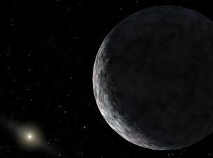

Space Colonization
Space Colonization
The Tenth Planet
|
Discovery of 2003 UB 313 and 2003 EL 61 raises questions.
|
 |
The objects, UB 313 slightly larger and EL 61 a bit smaller than Pluto, created a frenzy in the media. Everyones attention is on space right now, with the Discovery in orbit and due for a tense landing next week. Discoverys astronauts are performing spacewalks and transferring supplies to the International Space Station and garbage back to the Discovery; there are daily headlines about human activity in space. Then the news: Tenth Planet Discovered!
The discovery of two large Kuiper Belt objects actually raises more questions. How many? Are there any larger objects waiting for discovery? The big one to me is: When is a planet not a planet?
As humanitys ability to observe the Kuiper Belt in greater detail, one has to wonder if it is time to rethink the definition of a planet. Many astronomers believe that thousands of Pluto-sized objects remain to be discovered, and astronomer Alan Stern of the Southwest Research Institute contends that Mars-sized and even Earth-sized objects might be lurking in the Kuiper Belt. Are we to continue adding planets until we live in a solar system of not nine, but hundreds or thousands of planets? What will astrologers do?
Its time for astronomers to come up with some kind of definition of planets. If we think of Sol and our solar neighborhood as a normal example of a solar system, and indeed recent discoveries of
protoplanetary discs around distant stars seem to validate that assumption, then as we learn more about the universe, we need a planetary standard. In my opinion, neither UB 313 nor EL 61 can meet that standard, maybe not even Pluto.
Examining Pluto, if it remains the ninth planet, it should be because of its location and orbit. Pluto lies inside the Kuiper Belt, perhaps the first definition of a planet. Larger bodies that orbit the sun beyond the Kuiper Belts inner limit thus could be ruled out of the planet class. Pluto also has an orbit which is relatively aligned with the other eight planets. UB 313 orbits at a 45 degree angle to the rest of the planets. This could be a second definition of planet, that a bodys orbit be on or near the same plane as other bodies in a solar system.
What to call these objects if not planets? Well, there is a perfectly good name out there, which has fallen out of common usage: planetoid. Planetoid used to be used to describe what we now call asteroids. Why not dust-off planetoid and use it to describe objects which do not fit some kind of planet definition agreed on by astronomers?
Above all, we must do this for astrologers. Most of them are struggling with the traits and implications of the old nine planets as it is. Cmon, lets give em a break.
^ Top ^